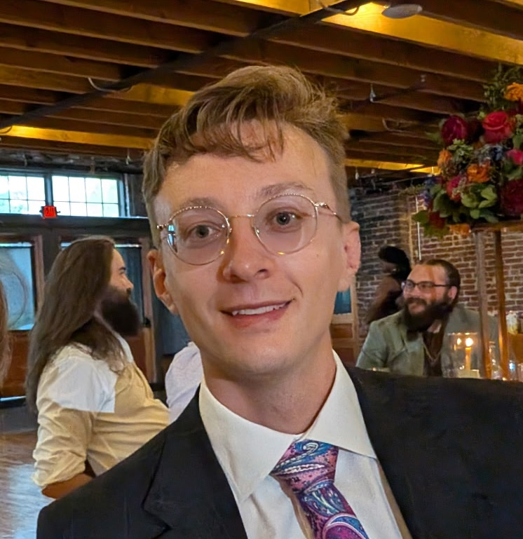

Dominic Bair
PhD Candidate in Mathematics
University of Tennessee
About
I am a PhD candidate in mathematics at the University of Tennessee, advised by Dr. Yulan Qing and Dr. Jan Rosinski. My current interests lie at the intersection of coarse geometry and stochastic processes. In particular, I am interested in percolation and graph limit theory. My previous research includes machine learning, computer vision, Bayesian inference, and experimental physics. I'm passionate about both theoretical research and communicating mathematics through teaching.
Research
- First-passage percolation, non-positive curvature, and radial maps, — Preprint , 2025.
Joint work with Sagnik Jana and Yulan Qing. A study on the preservation, or lack there of, of geometries with non-positive curvature under first-passage percolation. - DVM: A deep learning algorithm for minimizing functionals, — Theses and Dissertations at Montana State University (MSU), 2022.
Advised by Dr. Dominique Zosso. A novel deep learning algorithm using concepts in caclulus of varitaions to solve PDE's. - MNPmApp: An image analysis tool to quantify mononuclear phagocyte distribution in mucosal tissues, — Cytometry Part A, vol. 101, no. 12, pp. 1012–1026, 2022.
Joint work with Catherine Potts, Julia Schearer, Thomas A. Sebrell, Becky Ayler, Jordan Love, Jennifer Dankoff, Paul R. Harris, Dominique Zosso, and Diane Bimczok. A tool to analyze spatial statistics of dendritic cells in gastric mucosa.
Talks Given
- Ordered frequency in relatively hyperboic groups – University of Tennessee Topology Seminar - Fall 2026
- First-passage percolation, non-posititve curvature, and radial maps – YGGT XIV - Summer 2026
- Graphons and random graphs – University of Tennessee Graduate Student Seminar - Spring 2026
- Introduction to first-passage percolation and subadditive processes – University of Tennessee Probability Seminar - Fall 2025
- First-passage percolation on relatively hyperbolic graphs: bi-infinite geodesics, radial maps, and infinitely many thick triangles – University of Tennessee Topology Seminar - Fall 2025
- First-passage percolation on a hyperbolic graph admits bi-infinite geodesics – University of Tennessee Oral Specialty Exam - 2025
- Deep variational methods – Montana State University Master's Thesis Defense - 2022
- Deep variational methods – Montana State University Poster Slam - 2021
- Deep variational methods – Walk the Walk Chalk the Chalk - 2021
- Spatial statistics in histology images – SIAM Northern States Section Student Chapters Conference - 2020
- Spatial statistics in histology images – Data Science and Image Analysis Conference of the Pacific Northwest - 2020
- Spatial statistics in histology images – Montana State University Winter Research Celebration - 2019
Conferences Attended
- YGGT XIV – Korea Institute for Advanced Study - June 2026
Topics: Young Geometric Group Theory. - SLMath TGS Low Dimensions Workshop – SLMath - March 2026
Topics: Topological and geometric structures in low dimensions. - ATMCS11 – Montana State University - July 2025
Topics: Algebraic Topology, Methods, Computation, & Science. - 53rd Barrett Lectures – University of Tennessee - May 2025
Topics: Recent Development in Geometric Group Theory. - 52nd Barrett Lectures – University of Tennessee - May 2024
Topics: Stochastic Analysis and its Application.
Teaching
- M115 Statistical Reasoning – Fall 2026
Role: Instructor for two sections. - M115 Statistical Reasoning – Spring 2026
Role: Instructor for two sections.
Curriculum Vitae
You can download my CV here: cv.pdf
Contact
Email: dbair@vols.utk.edu
Office: E202, Walters Academic Building, University of Tennessee
GitHub: @DothWalrus